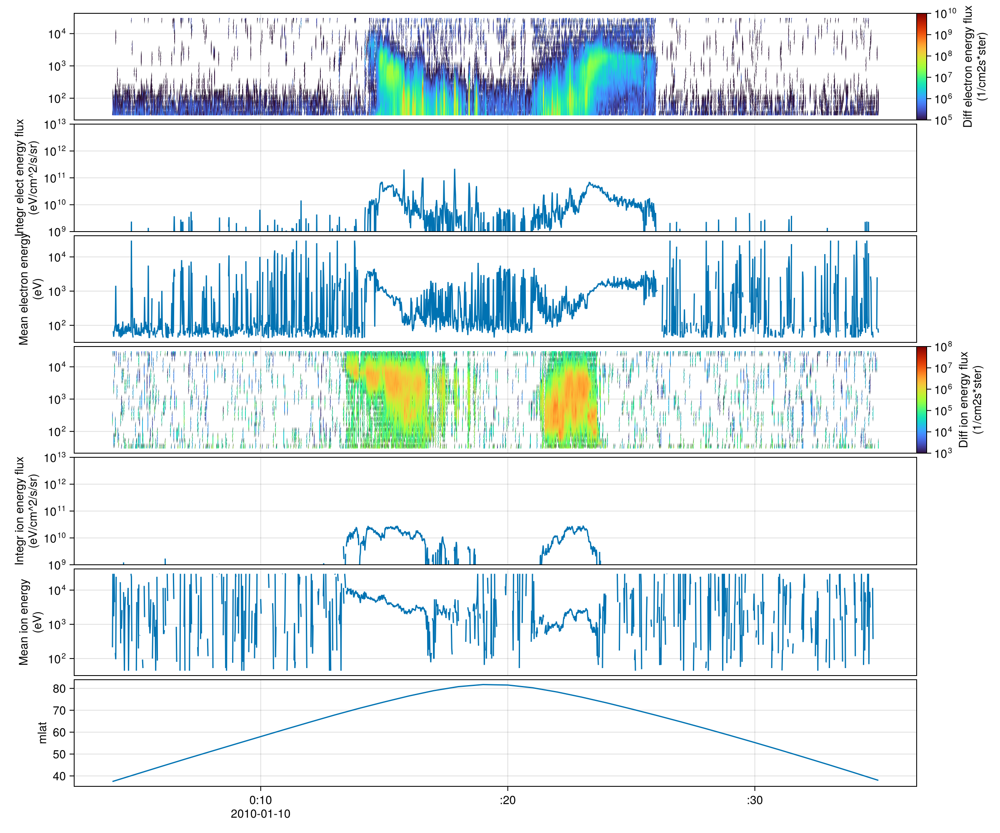

DMSPData.jl


Access and process Defense Meteorological Satellite Program (DMSP) data.
Installation
using Pkg
Pkg.add("DMSPData")Usage
using DMSPDataMadrigal
8100 is the instrument ID for DMSP in Madrigal database.
using DMSPData.Madrigal
using Dates
t0 = DateTime("2010-01-10T00:04")
t1 = DateTime("2010-01-10T00:35")
kinst = 8100
get_experiments(kinst, t0, t1)
get_instrument_files(kinst, t0, t1)19-element view(::CSV.File, [129248, 129249, 283211, 283212, 283213, 283214, 283215, 283216, 283217, 283218, 283219, 283220, 283221, 283222, 283223, 283224, 283225, 283226, 283227]) with eltype CSV.Row:
(name = "dms_ut_20100110_16.002.hdf5", id = 100015626, kindat = 10246, category = 1, status = false, access = true, permission = true, mod_date = Dates.DateTime("2024-10-16T00:00:00"), mod_time = 164438)
(name = "dms_ut_20100110_18.002.hdf5", id = 100015626, kindat = 10248, category = 1, status = false, access = true, permission = true, mod_date = Dates.DateTime("2024-10-16T00:00:00"), mod_time = 164438)
(name = "dms_20100110_15s1.001.hdf5", id = 100032230, kindat = 10115, category = 1, status = false, access = true, permission = false, mod_date = Dates.DateTime("2016-09-07T00:00:00"), mod_time = 121355)
(name = "dms_20100110_16s1.001.hdf5", id = 100032230, kindat = 10116, category = 1, status = false, access = true, permission = false, mod_date = Dates.DateTime("2016-09-07T00:00:00"), mod_time = 125847)
(name = "dms_20100110_17s1.001.hdf5", id = 100032230, kindat = 10117, category = 1, status = false, access = true, permission = false, mod_date = Dates.DateTime("2016-09-07T00:00:00"), mod_time = 134409)
(name = "dms_20100110_18s1.001.hdf5", id = 100032230, kindat = 10118, category = 1, status = false, access = true, permission = false, mod_date = Dates.DateTime("2016-09-07T00:00:00"), mod_time = 141906)
(name = "dms_20100110_15s4.001.hdf5", id = 100032230, kindat = 10145, category = 3, status = false, access = true, permission = false, mod_date = Dates.DateTime("2016-09-07T00:00:00"), mod_time = 143126)
(name = "dms_20100110_16s4.001.hdf5", id = 100032230, kindat = 10146, category = 3, status = false, access = true, permission = false, mod_date = Dates.DateTime("2016-09-07T00:00:00"), mod_time = 144149)
(name = "dms_20100110_17s4.001.hdf5", id = 100032230, kindat = 10147, category = 3, status = false, access = true, permission = false, mod_date = Dates.DateTime("2016-09-07T00:00:00"), mod_time = 145305)
(name = "dms_20100110_18s4.001.hdf5", id = 100032230, kindat = 10148, category = 3, status = false, access = true, permission = false, mod_date = Dates.DateTime("2016-09-07T00:00:00"), mod_time = 150157)
(name = "dms_20100110_16e.001.hdf5", id = 100032230, kindat = 10216, category = 1, status = false, access = true, permission = false, mod_date = Dates.DateTime("2016-09-07T00:00:00"), mod_time = 155845)
(name = "dms_20100110_17e.001.hdf5", id = 100032230, kindat = 10217, category = 1, status = false, access = true, permission = false, mod_date = Dates.DateTime("2016-09-07T00:00:00"), mod_time = 165642)
(name = "dms_20100110_18e.001.hdf5", id = 100032230, kindat = 10218, category = 1, status = false, access = true, permission = false, mod_date = Dates.DateTime("2016-09-07T00:00:00"), mod_time = 175327)
(name = "dms_ut_20100110_15.001.hdf5", id = 100032230, kindat = 10245, category = 3, status = false, access = true, permission = false, mod_date = Dates.DateTime("2018-03-26T00:00:00"), mod_time = 135845)
(name = "dms_ut_20100110_15.002.hdf5", id = 100032230, kindat = 10245, category = 1, status = false, access = true, permission = false, mod_date = Dates.DateTime("2018-06-05T00:00:00"), mod_time = 133400)
(name = "dms_20100210_17s4.002.hdf5", id = 100032230, kindat = 10147, category = 1, status = false, access = true, permission = false, mod_date = Dates.DateTime("2018-11-01T00:00:00"), mod_time = 153409)
(name = "dms_20100210_15s4.002.hdf5", id = 100032230, kindat = 10145, category = 1, status = false, access = true, permission = false, mod_date = Dates.DateTime("2018-11-01T00:00:00"), mod_time = 153410)
(name = "dms_20100210_18s4.002.hdf5", id = 100032230, kindat = 10148, category = 1, status = false, access = true, permission = false, mod_date = Dates.DateTime("2018-11-01T00:00:00"), mod_time = 153411)
(name = "dms_20100210_16s4.002.hdf5", id = 100032230, kindat = 10146, category = 1, status = false, access = true, permission = false, mod_date = Dates.DateTime("2018-11-01T00:00:00"), mod_time = 153411)Quicklook
Here we reproduce the figure 3 in F16 10 January 2010 first auroral crossing of the day (Redmon et al. [1]).
using DMSPData
using DimensionalData
ssj_ds = SSJ_Dataset(16, t0, t1)MFDataset
Path: ["/tmp/jl_wZz3WL/dms_20100110_16e.001.hdf5"]
Variables (18):
el_i_ener
el_i_flux
el_m_ener
gdalt
gdlat
glon
ion_i_ener
ion_i_flux
ion_m_ener
mlat
...
s1_ds = S1_Dataset(16, t0, t1)
s4_ds = S4_Dataset(16, t0, t1)MFDataset
Path: ["/tmp/jl_wZz3WL/dms_20100110_16s4.001.hdf5", "/tmp/jl_wZz3WL/dms_20100210_16s4.002.hdf5"]
Variables (22):
year
month
day
hour
min
sec
recno
kindat
kinst
ut1_unix
...
using CairoMakie, SpacePhysicsMakie
vars = ("el_d_ener", "el_i_ener", "el_m_ener", "ion_d_ener", "ion_i_ener", "ion_m_ener", "mlat")
ds = DimStack(ssj_ds, vars; data_params = DMSPData.ssj_metadata_patch)
for A in (ds.el_d_ener, ds.ion_d_ener)
A[A .< 1e3] .= NaN
end
let colormap = :turbo, f = Figure(; size = (1200, 1000))
faxs = tplot(f, ds; colormap)
ylims!(faxs.axes[2], 1e9, 1e13)
ylims!(faxs.axes[5], 1e9, 1e13)
f
end
F16 10 January 2010 first auroral crossing of the day. (a) Background adjusted electron differential energy flux (jE) (eV/cm2 sr ΔeV s), (b) integrated electron energy flux (JE) (eV/cm2 sr s), (c) average electron energy (Eavg) (eV), (d–f) same quantities for ions, and (g) AACGM latitude and MLT (right y axis). - Redmon et al. [1]
Experiment Notes
ssj_ds.notesCatalog information from record 0:
KRECC 2001 Catalogue Record, Version 1
KINSTE 8100 Defense Meteorological Satellite Program
MODEXP 10216
IBYRE 2010 Beginning year
IBDTE 110 Beginning month and day
IBHME 0 Beginning UT hour and minute
IBCSE 0 Beginning centisecond
IEYRE 2010 Ending year
IEDTE 111 Ending month and day
IEHME 0 Ending UT hour and minute
IECSE 0 Ending centisecond
CPI Patricia Doherty
IBYRT 2010 Beginning year
IBDTT 0110 Beginning month and day
IBHMT 0000 Beginning UT hour and minute
IBCST 0000 Beginning centisecond
IEYRT 2010 Ending year
IEDTT 0111 Ending month and day
IEHMT 0000 Ending UT hour and minute
IECST 0000 Ending centisecond
Header information from record 1:
KRECH 3002 Header Record, Version 3
KINST 8100 Defense Meteorological Satellite Program
KINDAT 10216 F16 flux/energy values
CKINDAT This file contains all flux/energy parameters measured on the DMSP
CKINDAT spacecraft.
CKINDAT This file is all NASA level 1 data - data quality is not included.
CKINDAT Background counts have been
CKINDAT subtracted from these values according to the following algorithm:
CKINDAT Looks for a nearly constant
CKINDAT count rate in the higher energy channels of the electron or ion
CKINDAT spectrum. If such a nearly constant
CKINDAT count rate is found, then that rate plus one sigma of the rate is
CKINDAT subtracted from all counts in the
CKINDAT given spectrum. That background is then cached and used for future
CKINDAT measurements that do not fit that
CKINDAT criteria. If a cached background level is used and too many values
CKINDAT would be negative, the background
CKINDAT is reduced by the average negative value. In any case, counts are
CKINDAT never set below zero.
IBYRT 2010 Beginning year
IBDTT 110 Beginning month and day
IBHMT 0 Beginning UT hour and minute
IBCST 0 Beginning centisecond
IEYRT 2010 Ending year
IEDTT 111 Ending month and day
IEHMT 0 Ending UT hour and minute
IECST 0 Ending centisecond
C 1D Parameters:
KODS(0) 54 Magnetic local time hour
KODS(1) 110 Geodetic altitude (height) km
KODS(2) 160 Geodetic latitude of measurement deg
KODS(3) 170 Geographic longitude of measurement deg
KODS(4) 228 Magnetic latitude deg
KODS(5) 248 Magnetic Longitude deg
KODS(6) 2172 Integrated elect num flux (1/cm2s*ster) numFlux
KODS(7) 2174 Integrated ion num flux (1/cm2s*ster) numFlux
KODS(8) 2176 Integr elect energy flux (eV/cm2s*ster) enFlux
KODS(9) 2178 Integr ion energy flux (eV/cm2s*ster) enFlux
KODS(10) 2182 Mean electron energy eV
KODS(11) 2184 Mean ion energy eV
KODS(12) 4200 Satellite id N/A
C 2D Parameters:
KODM(0) 2160 Diff electron num flux (1/cm2eVs*ster) numFlux
KODM(1) 2162 Diff electron energy flux (1/cm2s*ster) enFlux
KODM(2) 2164 Diff ion num flux (1/cm2eVs*ster) numFlux
KODM(3) 2166 Diff ion energy flux (1/cm2s*ster) enFlux
KODM(4) 2168 Channel central energy eV
KODM(5) 2171 Channel spacing energy eV
CANALYST Kevin Martin
CANDATE Tue Jun 26 19:28:30 2018 UT
IBYRT 2010 Beginning year
IBDTT 0110 Beginning month and day
IBHMT 0000 Beginning UT hour and minute
IBCST 0000 Beginning centisecond
IEYRT 2010 Ending year
IEDTT 0111 Ending month and day
IEHMT 0000 Ending UT hour and minute
IECST 0000 Ending centisecondAPI
- [1]
- R. J. Redmon, W. F. Denig, L. M. Kilcommons and D. J. Knipp. New DMSP Database of Precipitating Auroral Electrons and Ions. Journal of Geophysical Research: Space Physics 122, 9056–9067 (2017).
Reproducibility
The documentation of this package was built using these direct dependencies,
Status `~/work/DMSPData.jl/DMSPData.jl/docs/Project.toml`
[13f3f980] CairoMakie v0.15.8
[d5333723] DMSPData v0.1.1 `~/work/DMSPData.jl/DMSPData.jl`
[0703355e] DimensionalData v0.29.25
[e30172f5] Documenter v1.16.1
[daee34ce] DocumenterCitations v1.4.1
[0c28ffd8] SpacePhysicsMakie v0.2.4and using this machine and Julia version.
Julia Version 1.12.3
Commit 966d0af0fdf (2025-12-15 11:20 UTC)
Build Info:
Official https://julialang.org release
Platform Info:
OS: Linux (x86_64-linux-gnu)
CPU: 4 × AMD EPYC 7763 64-Core Processor
WORD_SIZE: 64
LLVM: libLLVM-18.1.7 (ORCJIT, znver3)
GC: Built with stock GC
Threads: 1 default, 1 interactive, 1 GC (on 4 virtual cores)
Environment:
JULIA_PKG_SERVER_REGISTRY_PREFERENCE = eager